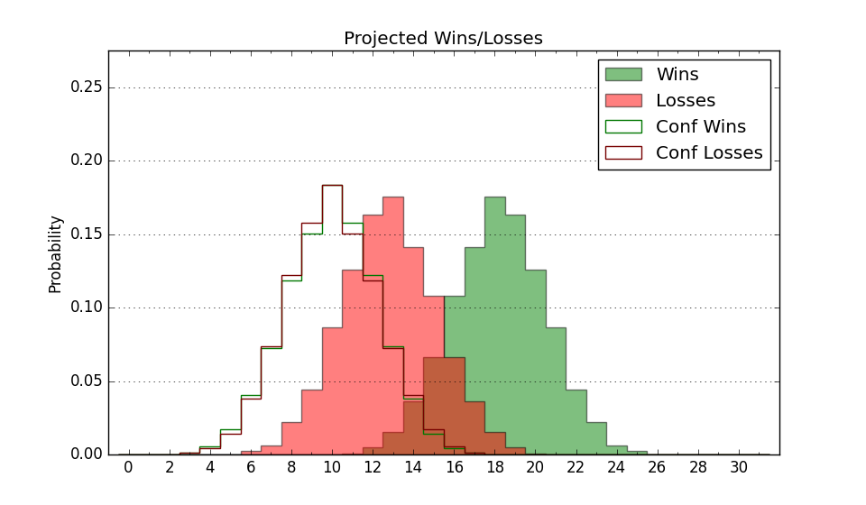

| Home | Game Probabilities | Conferences | Preseason Predictions | Odds Charts | NCAA Tournament |
| City: | Stanford, California | |
| Conference: | ACC (1st)
| |
| Record: | 1-0 (Conf) 9-2 (Overall) | |
| Ratings: | Comp.: 10.3 (86th) Net: 11.5 (82nd) Off: 113.8 (59th) Def: 102.3 (132nd) SoR: 27.6 (73rd) |
| Remaining | ||||||
|---|---|---|---|---|---|---|
| Date | Opponent | Win Prob | Pred. | |||
| 12/21 | (N) Oregon (20) | 20.2% | L 71-80 | |||
| 1/1 | @ Clemson (30) | 14.3% | L 65-77 | |||
| 1/4 | @ Pittsburgh (14) | 9.4% | L 67-83 | |||
| 1/8 | Virginia Tech (149) | 83.0% | W 75-65 | |||
| 1/11 | Virginia (101) | 72.7% | W 66-60 | |||
| 1/15 | @ Wake Forest (100) | 42.6% | L 68-70 | |||
| 1/18 | @ North Carolina (18) | 11.8% | L 74-89 | |||
| 1/22 | Miami FL (88) | 65.3% | W 81-76 | |||
| 1/25 | Florida St. (74) | 61.5% | W 77-73 | |||
| 1/29 | Syracuse (99) | 71.6% | W 81-74 | |||
| 2/1 | @ SMU (41) | 18.0% | L 72-83 | |||
| 2/5 | Wake Forest (100) | 71.6% | W 72-65 | |||
| 2/8 | North Carolina St. (90) | 67.8% | W 73-68 | |||
| 2/12 | @ Georgia Tech (115) | 48.9% | L 74-75 | |||
| 2/15 | @ Duke (3) | 4.2% | L 60-81 | |||
| 2/22 | California (108) | 74.2% | W 82-75 | |||
| 2/26 | Boston College (183) | 86.8% | W 79-66 | |||
| 3/1 | SMU (41) | 42.7% | L 77-79 | |||
| 3/5 | @ Notre Dame (66) | 29.1% | L 68-74 | |||
| 3/8 | @ Louisville (56) | 21.6% | L 68-77 | |||
| Previous | Game Score | |||||
| Date | Opponent | Win Prob | Result | Off | Def | Net |
| 11/4 | Denver (294) | 94.4% | W 85-62 | -3.0 | 8.9 | 5.9 |
| 11/8 | Cal St. Fullerton (259) | 92.5% | W 80-53 | 8.0 | 10.5 | 18.5 |
| 11/12 | Northern Arizona (268) | 92.9% | W 90-64 | 24.6 | -7.3 | 17.4 |
| 11/17 | UC Davis (155) | 84.5% | W 79-65 | 0.9 | 3.5 | 4.4 |
| 11/20 | Norfolk St. (189) | 87.2% | W 70-63 | -3.1 | 5.5 | 2.4 |
| 11/23 | @Santa Clara (70) | 30.4% | W 71-69 | -3.2 | 14.7 | 11.5 |
| 11/26 | (N) Grand Canyon (94) | 54.8% | L 71-78 | -15.7 | -1.0 | -16.7 |
| 11/30 | Cal Poly (208) | 88.5% | L 90-97 | -2.5 | -24.1 | -26.5 |
| 12/3 | Utah Valley (151) | 83.6% | W 77-63 | -8.4 | 9.1 | 0.6 |
| 12/7 | @California (108) | 45.8% | W 89-81 | 24.4 | -12.0 | 12.4 |
| 12/17 | Merrimack (218) | 89.4% | W 74-68 | -0.0 | -9.8 | -9.9 |
| Stats & Trends | |||||
|---|---|---|---|---|---|
| Current | Day | Week | Month | Season | |
| Composite | 10.3 | -0.6 | -0.7 | +0.4 | +4.0 |
| Comp Rank | 86 | -7 | -11 | -7 | +13 |
| Net Efficiency | 11.5 | -1.0 | -1.2 | -13.1 | -- |
| Net Rank | 82 | -5 | -6 | -53 | -- |
| Off Efficiency | 113.8 | -0.0 | -0.5 | -9.3 | -- |
| Off Rank | 59 | -2 | -2 | -36 | -- |
| Def Efficiency | 102.3 | -1.0 | -0.8 | -3.7 | -- |
| Def Rank | 132 | -9 | -9 | -33 | -- |
| SoS Rank | 319 | -17 | -19 | +26 | -- |
| Exp. Wins | 18.2 | -0.1 | -0.2 | +0.5 | +3.0 |
| Exp. Conf Wins | 10.0 | -0.2 | -0.3 | +1.1 | +2.5 |
| Conf Champ Prob | 0.1 | -0.0 | -0.1 | -0.4 | -0.1 |

| Advanced Stats | ||
|---|---|---|
| Stat | Value | Rank |
| Off Eff FG % | 0.514 | 150 |
| Off Ast Ratio | 0.157 | 113 |
| Off ORB% | 0.332 | 67 |
| Off TO Rate | 0.111 | 15 |
| Off FT Ratio | 0.349 | 141 |
| Def Eff FG % | 0.495 | 134 |
| Def Ast Ratio | 0.109 | 16 |
| Def ORB% | 0.242 | 58 |
| Def TO Rate | 0.153 | 156 |
| Def FT Ratio | 0.339 | 197 |